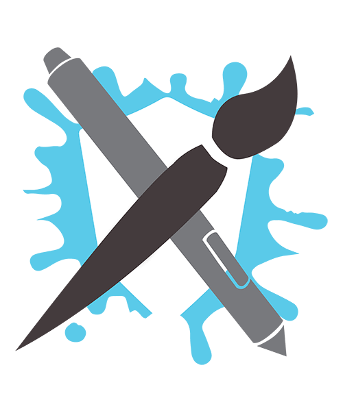
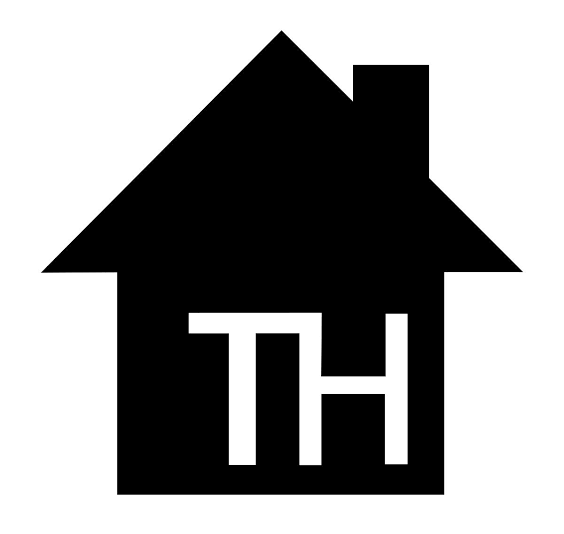
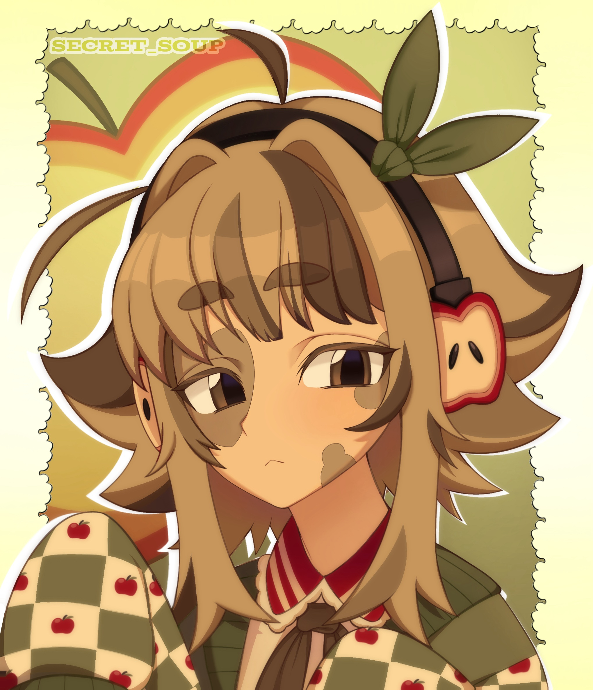
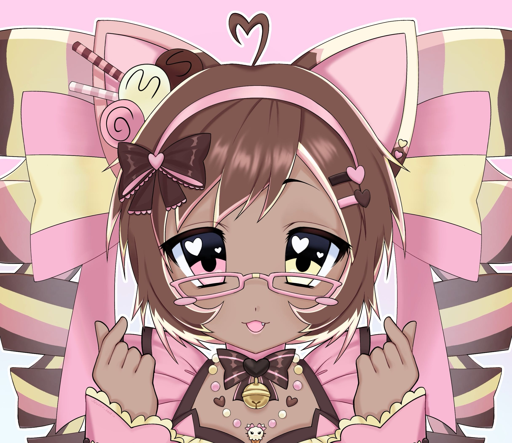
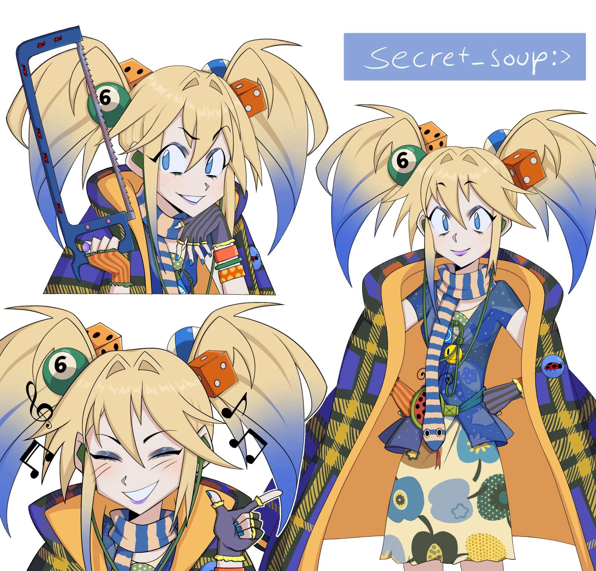
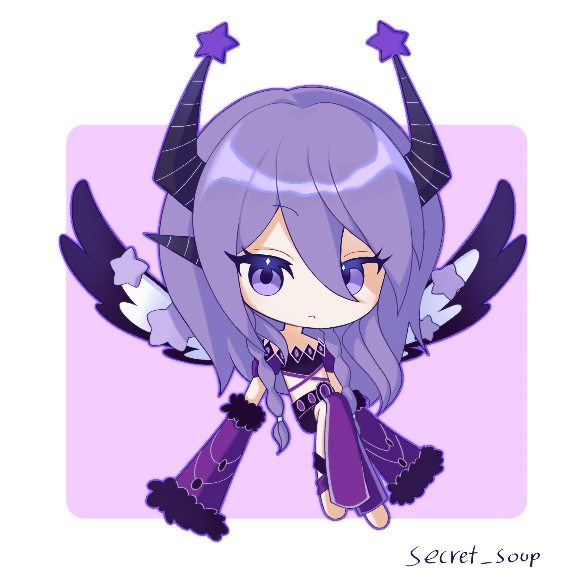
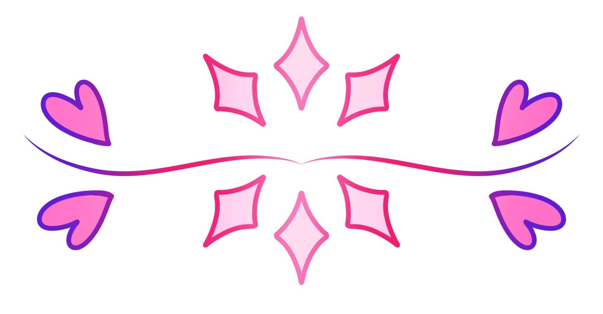
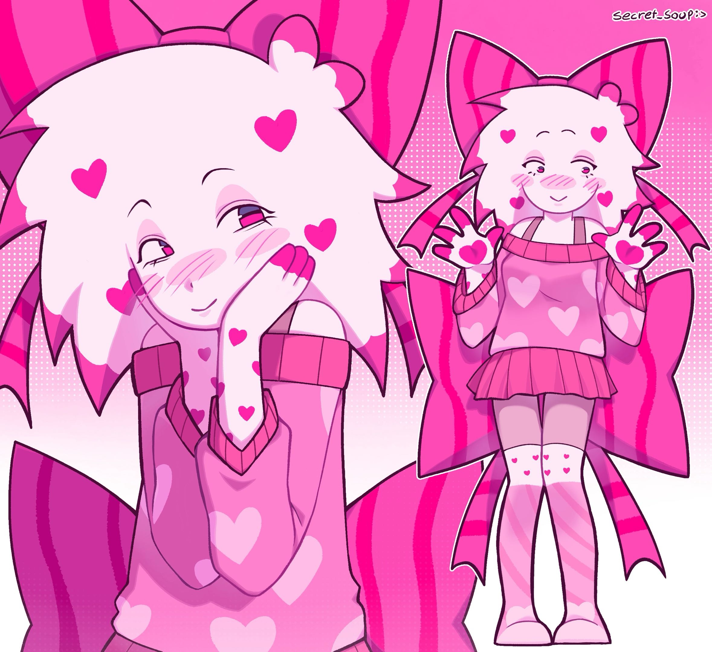
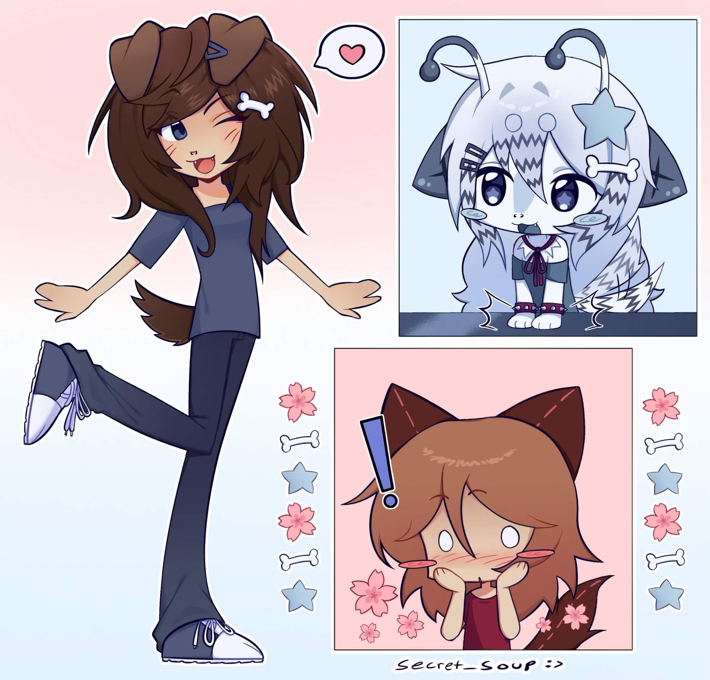

Kontakt-infoen min:







Litt informasjon om bildene og hvorfor jeg valgte dem: Disse bildene er alle tegninger av karakter som er eid av folk jeg skjenner på en eller annen måte. De fleste av disse bildene er hva du kunne kaldt "Art trades", men ikke alle. Jeg valgte disse bildene fordi de var favorittene mine ut av alle tegningene jeg har gjort til nå. Jeg liker fargene og de frustrerte meg ikke like mye i prossesen for å lage dem. kvaligtetene mine: Jeg er ganske kjent med digital tegning, som du sikkert kan se. Jeg vil si at jeg er rask og hvis du har en spesifik stil du vil ha, så klarer jeg godt å replikere det.

Min introduksjon: Hei jeg heter Maria og jeg er 17 år gammel, jeg går IT linjen på Breivang videregående skole. Siden det er mitt siste år, så må jeg gjøre meg klar til å starte lærlingtiden min. Jeg både gleder og gruer meg, det blir definitivt å bli veldig annerledes, uansett håper jeg for det beste.
Originalt ville jeg ikke utdanne meg i IT, du kan sikkert gjette hva jeg ville utdanne meg som. Jeg hadde lyst til å bli kunstner, så hvorfor tok jeg IT i stedet? Vel det er faktisk et svar på det. Trygghet, i de siste årene har det ikke vært det beste i den kunstneriske verdenen, mest på grunn av KI tror jeg. Jeg vil si at selv om at dette ikke var min originale drøm, så tror jeg fortsatt at jeg valgte riktig. IT er utrolig divers når det kommer til arbeid, og jeg vet at det er definitivt ting i det som lar meg være kreativ, som var det jeg likte med kunst i det første.

